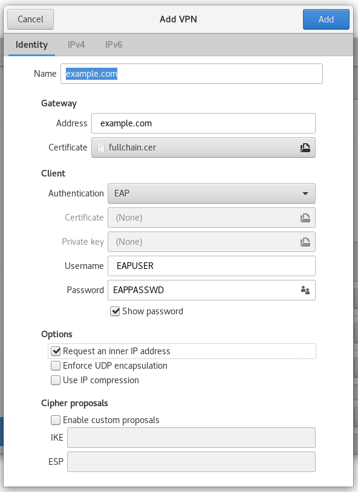

Example environment
System: CentOS 7 x64 Minimal (After Profiling by CentOS 7 Minimal Post Install)
SSL Domain: example.com (After issue certificate following Letsencrypt)
Server end
Install strongswan
$ wget http://download-ib01.fedoraproject.org/pub/epel/7/x86_64/Packages/s/strongswan-5.7.2-1.el7.x86_64.rpm && \
yum install -y strongswan-5.7.2-1.el7.x86_64.rpm
Issue SSL certs
Configurate strongswan
Assuming SSL certs deploy into /etc/nginx/certs, which contains:
- ca.cer
- fullchain.cer
- example.com.cer
- example.com.conf
- example.com.csr
- example.com.cer.conf
- example.com.key
Assume EAP user named EAPUSER, password set to EAPPASSWD.
Install certs to strongswan
$ ln -snf /etc/nginx/certs/example.com/ca.cer /etc/strongswan/ipsec.d/cacerts/ca.cer
$ ln -snf /etc/nginx/certs/example.com/fullchain.cer /etc/strongswan/ipsec.d/certs/fullchain.cer
$ ln -snf /etc/nginx/certs/example.com/example.cer /etc/strongswan/ipsec.d/certs/example.cer
$ ln -snf /etc/nginx/certs/example.com/example.key /etc/strongswan/ipsec.d/private/example.key
/etc/strongswan/ipsec.conf
config setup
uniqueids=never
conn %default
keyexchange=ikev2
ike=aes256-sha1-modp1024,aes128-sha1-modp1024,3des-sha1-modp1024
esp=aes256-sha256,aes256-sha1,3des-sha1
leftauth=pubkey
leftsendcert=always
rightsourceip=10.24.1.0/24
rightdns=8.8.8.8
rekey=no
reauth=no
auto=add
conn Client-EAP
fragmentation=yes
leftcert=fullchain.cer
leftsubnet=0.0.0.0/0
rightauth=eap-mschapv2
eap_identity=EAPUSER
/etc/strongswan/ipsec.secrets
fullchain.cer : RSA example.com.key
EAPUSER %any : EAP "EAPPASSWD"
Enable NAT
$ echo 'net.ipv4.ip_forward=1' > /etc/sysctl.d/ipforward.conf && \
sysctl -p /etc/sysctl.d/ipforward.conf && \
iptables -t nat -L -s 10.24.1.0/24 -o eth0 -j MASQUERADE && \
service iptables save
Client end
Windows 10
- 开始 -> 设置 -> 网络和Internet -> VPN


- 添加VPN连接


- 保存
Linux(Using NetworkManager strongswan plugin)
Install "NetworkManager strongswan plugin"
$ sudo yum install -y NetworkManager-strongswan-gnome NetworkManager-strongswan
reload gnome-shell with 'Alt+F2 restart'Copy fullchain.cer to somewhere( Example in ~/Documents/certs/exmaple.com/)
Open gnome-settting -> Select Network -> Click '+' in the VPN part

Choose IPsec/IKEv2(strongswan) -> Configure it like this:
Click Add button to save the connection